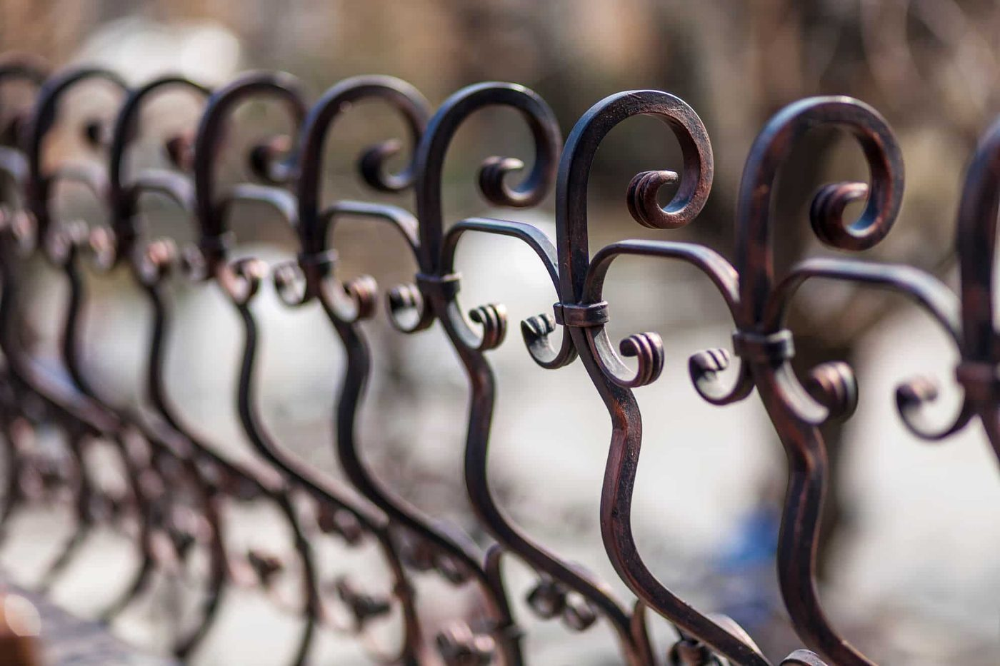

In This Guide
- Rain and humidity, high winds, and UV rays do the most damage, and each one hits a different material in a different way.
- Wood needs sealing and staining, metal needs rust protection, and vinyl and wood both need protection from the sun.
- Check your fence every season and after every big storm, so small problems get fixed early.
- Deeper posts, bracing, good drainage, and a raised base cut most wind and water damage.
A fence is more than a boundary. It is part of your home's curb appeal and security, and it stands outside through every kind of weather, all year long. Rain, wind, and sun wear it down a little at a time.
The good news is that most of that damage is easy to prevent once you know what to look for. Here is how the team at Big Easy Fence thinks about weather protection: what each kind of weather does to a fence, how each material holds up, and the habits that keep a fence standing through storm season and beyond.
What Weather Does to a Fence
Rain, wind, and sun each cause their own kind of damage. Knowing which one you are dealing with tells you what to fix first.
Rain and Humidity
Constant moisture leads to wood rot, rust on metal, and mold. High humidity can also make a wood fence warp and turn brittle over time.
High Winds
Strong gusts push hard on a fence, especially an older one or one that is not well anchored. Fences in areas with frequent storms or hurricanes are the most exposed, and the usual result is bent or toppled panels.
UV Radiation
The sun's UV rays fade and crack wood, vinyl, and even some metal finishes. A fence that sits in direct sun all day can look worn out long before its time.
How Each Fence Material Handles the Weather
Every material reacts to weather differently, so it helps to know the weak spot of the one you own.
Wood
A wood fence is a classic choice, and it is also the most sensitive to moisture. Water leads to rot, mold, and warping, and UV rays crack the boards and fade the color. Without treatment, a wood fence needs repairs or replacement sooner.
Vinyl
Vinyl is known for durability, but over time UV rays can leave it brittle, discolored, and prone to cracking. Extreme temperatures can also make it warp.
Metal: Steel, Aluminum, and Wrought Iron
Metal is strong, but it rusts and corrodes when it stays wet for long stretches. Salty and humid air speeds the process up, so a little extra care keeps rust from weakening the structure.
Chain Link
Chain link fences are generally low maintenance, but they can rust if the coating is not right. The links can also stretch and weaken in high winds or harsh temperatures.
| Material | Biggest Weather Risk | What Helps |
|---|---|---|
| Wood | Moisture, rot, warping, and UV cracking | Sealer or stain, plus good drainage |
| Vinyl | UV brittleness, fading, and warping in extreme heat | Routine cleaning and a check for cracks |
| Metal | Rust and corrosion | Protective coating and rust-resistant paint |
| Chain Link | Rust and stretched links after high winds | A proper coating and a check after big storms |
Choosing Materials That Stand Up to Weather
The material you pick is the biggest decision for weather resistance. Some hold up better against particular conditions than others.
Composite Wood
Composite fences combine the look of traditional wood with the durability of synthetic materials. They resist moisture, UV rays, and insects, which suits a humid region with plenty of sun.
Vinyl Fences
Vinyl is one of the most weather-resistant materials you can buy. It does not rot, rust, or warp under normal weather, and that helps in rainy areas. With proper maintenance, a vinyl fence can last for decades without showing wear. You can compare it with other materials on our fence types page.

Aluminum and Steel
In storm-prone areas, a metal fence is an excellent choice. Steel and aluminum are strong and resist impact damage, and with the right coating and upkeep they handle heavy rain, strong wind, and even salty air.
Wrought Iron
Wrought iron can rust, but protective coatings keep corrosion in check. Its sturdy construction takes high winds and heavy rain well, which makes it a good match for extreme weather.

Inspect Your Fence Often
Regular inspections catch small problems before they turn into big ones, and they matter most after heavy rain or a windstorm.
Early Signs of Damage
- Cracked or splintered wood. Temperature swings and humidity crack wood, and that weakens the whole fence.
- Rust on metal. Rust weakens the structure and can eventually cause holes or breaks.
- Loose or missing posts. Posts shift after heavy rain and wind, and that leads to leaning and instability.
- Fading or discoloration. Sun exposure fades a fence. It does not always hurt the structure, but it makes the fence look old.
Spotting these signs early lets you fix them before the damage spreads. When a repair is bigger than a weekend job, our fence repair team can take it from there.
A Seasonal Checklist
Every season brings its own challenges. Here is what to check.
Look for Winter Damage
Check for loose posts and cracks in the wood left by winter weather.
Watch the Heat
Heat can shrink and warp wood, and UV rays fade it. Check the finish and make sure the posts are secure.
Clear the Debris
Clean leaves out of the corners so moisture does not sit and cause rot, and check for damage from summer storms.
Check for Water Damage
Cold, wet weather finds every crack. Look for water damage and make sure gates open and close freely.
Sealing, Staining, and Protective Coatings
The right coating can add years to a fence and helps it get through extreme weather.
Why Seal and Stain
- Moisture protection. Sealing builds a barrier so water cannot soak into the wood and cause rot and warping.
- UV protection. Stains and sealants shield wood from the sun's rays, which cause fading and weaken the material.
- Better durability. A sealed fence resists rain and wind and stays sturdy longer.
- Better looks. Stain brings out the natural grain and gives the fence a richer, cleaner finish.
Products Worth Using
- A high-quality wood sealer. Choose one made for outdoor wood, with waterproofing and UV-blocking properties. Clear finishes keep the natural look of the wood.
- Stain with a built-in sealer. It adds color and protects against moisture and UV rays in one coat.
- Rust-resistant paint for metal. Pick a product made for outdoor metal surfaces so corrosion has a harder time starting.
Water-repellent treatments only work for so long. Reapply them regularly so the protection does not wear off without you noticing.
Reinforcing a Fence for Wind and Water
In harsh weather, reinforcing a fence ahead of time costs far less than repairing it afterward.
Strengthen It Against High Winds
- Use stronger posts. Set posts deep and anchor them securely. In windy areas, larger posts hold better.
- Add diagonal bracing. Bracing keeps the fence from leaning or swaying in gusts.
- Tighten the panels. Loose panels are the first to tear away in strong wind, so keep every panel secured to its posts.
- Plant a windbreak. Bushes or trees around the fence take some of the strain off it.
Prevent Water Damage and Rot
- Make sure water drains away. Water pooling at the base of a post leads to rot and instability, and a drainage fix can solve it.
- Raise wood fences slightly. A small gap above the ground keeps moisture from soaking into posts and panels.
- Reapply water-repellent treatments. Do it regularly for the best protection.
- Clean the fence. Remove leaves and debris that hold moisture against the surface and invite rot and mold.
When to Call a Professional
You can handle a lot of basic upkeep yourself. Some jobs are better left to a fence contractor, such as reinforcing posts, fixing storm damage, or repairing a fence that has started to lean.
A professional spots problems that a quick walk-around misses, and can recommend the right fix for your fence type and your local weather. Doing the job properly the first time also saves money on repeat repairs. If you are planning a new fence or a major upgrade, take a look at our residential fencing services or get in touch for a free estimate.
Want a Fence Built for Louisiana Weather?
We install, repair, and reinforce fences for homes and businesses. Tell us what you are dealing with and we will give you a straight answer.